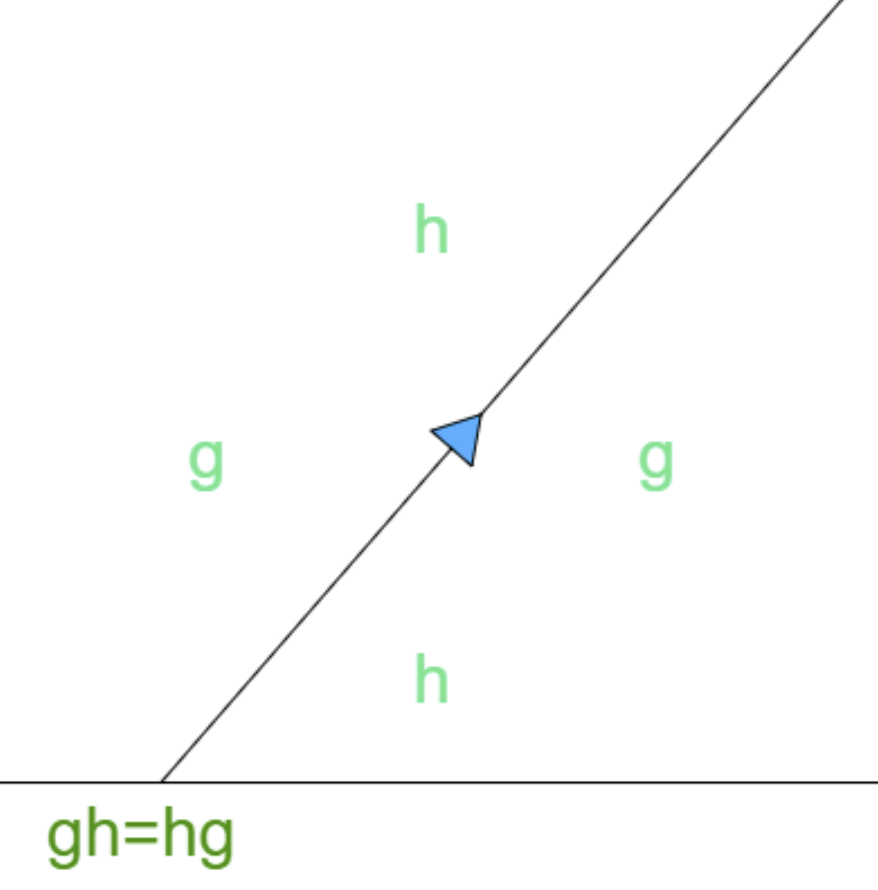

As I was doing my abstract algebra homework one day, I was trying to force an equation like 'ghg-1=h' into a different form. This led me to probe the internal structure of such an equation, and I sensed that my manipulation of the equation did not alter a kind of cyclic structure of the equation. I realized that it really ought to be represented as a circle of group elements, with left or right cancelling corresponding to changing the way the circle is divided up. I think it's best for you to try it yourself.
The diagram stands for the equation of the two sides, read 'along' the arrow. The idea is that 'moving' a term from one side of the equation to the other does not change this cyclic structure, but does invert the element and change where the equals sign goes. As I see it, the depiction of a circle of terms with an arrow on top neatly separates what is equivalent about all forms of the equation (the circle) from the variability in representing the equation (the arrow).
A cool feature of this representation is that the reversal of the arrow corresponds to an inversion, and reversal of the order of all elements. This makes obvious (not that it was very obscure before) the fact that (ab)-1=b-1a-1.
I imagined that this representation could be useful for actual human computation, by doing away with the arrow all together. All that would remain is to incorporate the introduction and elimination of inverse pairs, the combination of multiple equations, and maybe the manipulation of subexpressions according to a group presentation.
Unfortunately, this rather intriguing story came to an end when I realized, the day I discovered this, that my circle was nothing more than a commutative diagram. All of the geometric purity I had found, and all of the manipulation I was envisioning, is encompassed in the manipulation of categorical diagrams, specifically those for groupoids. At the very least, this excursion made me appreciate the categorical tradition even more.